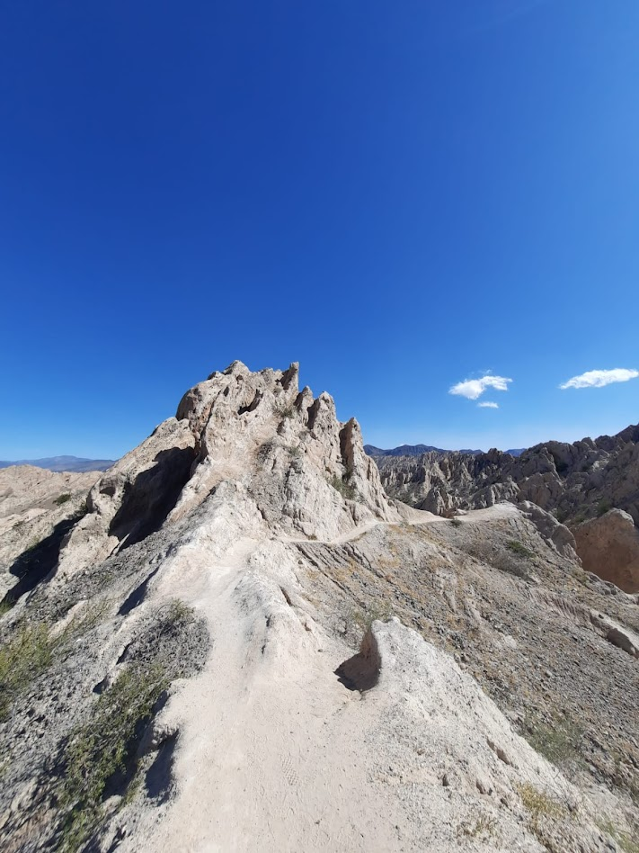
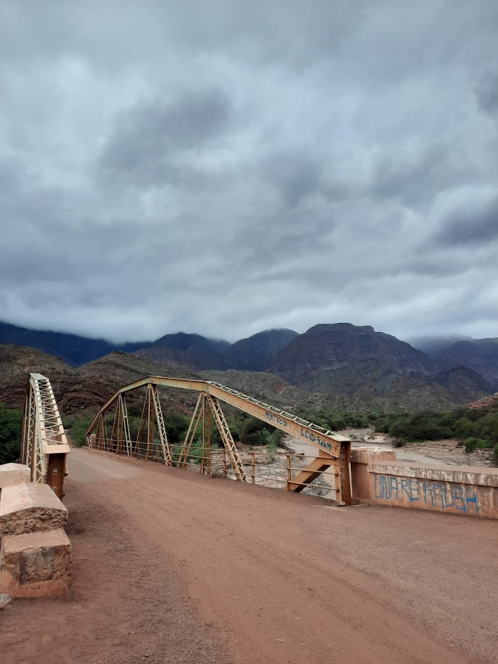
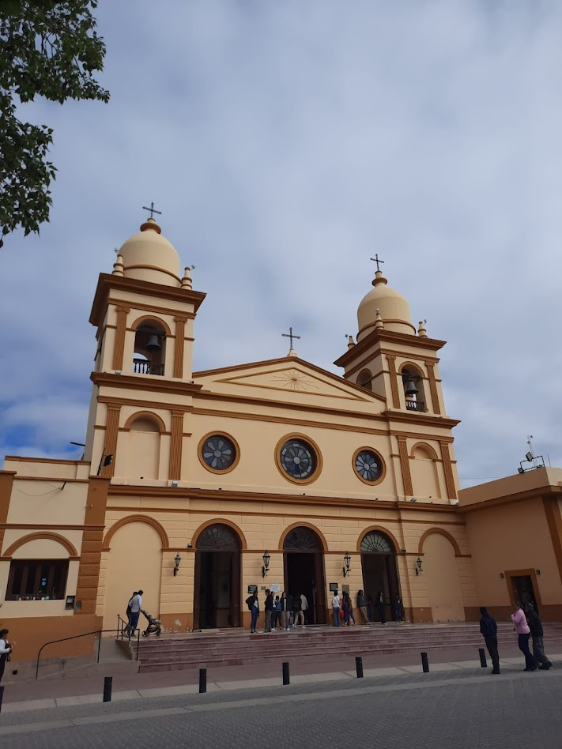
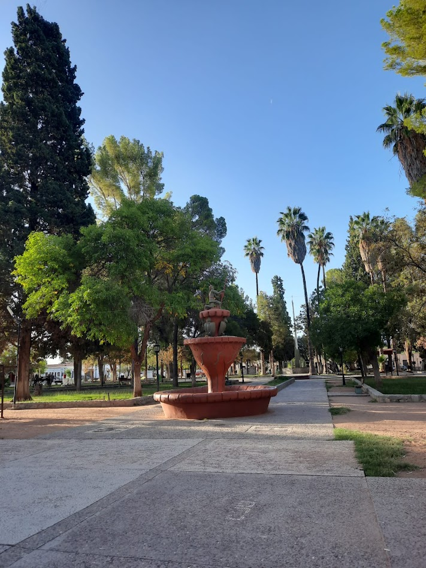
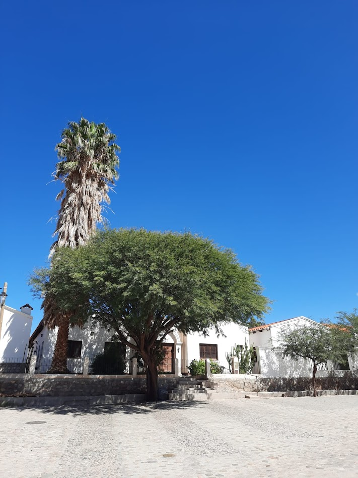
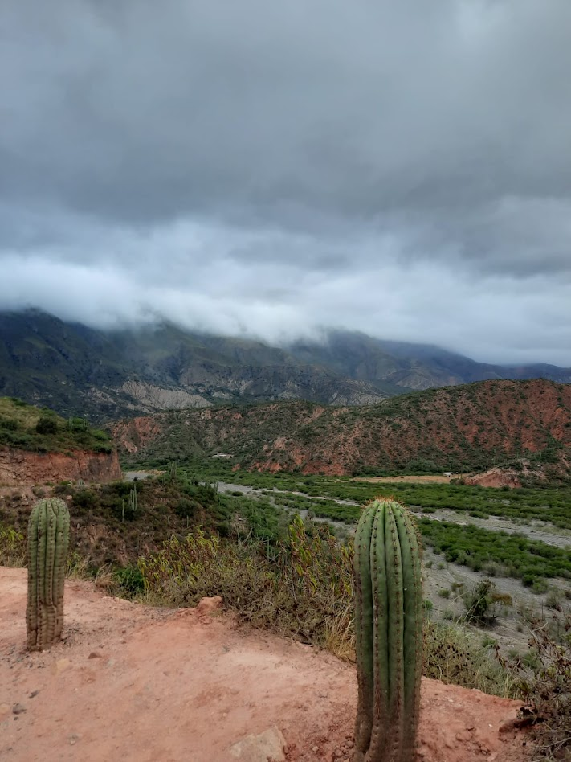
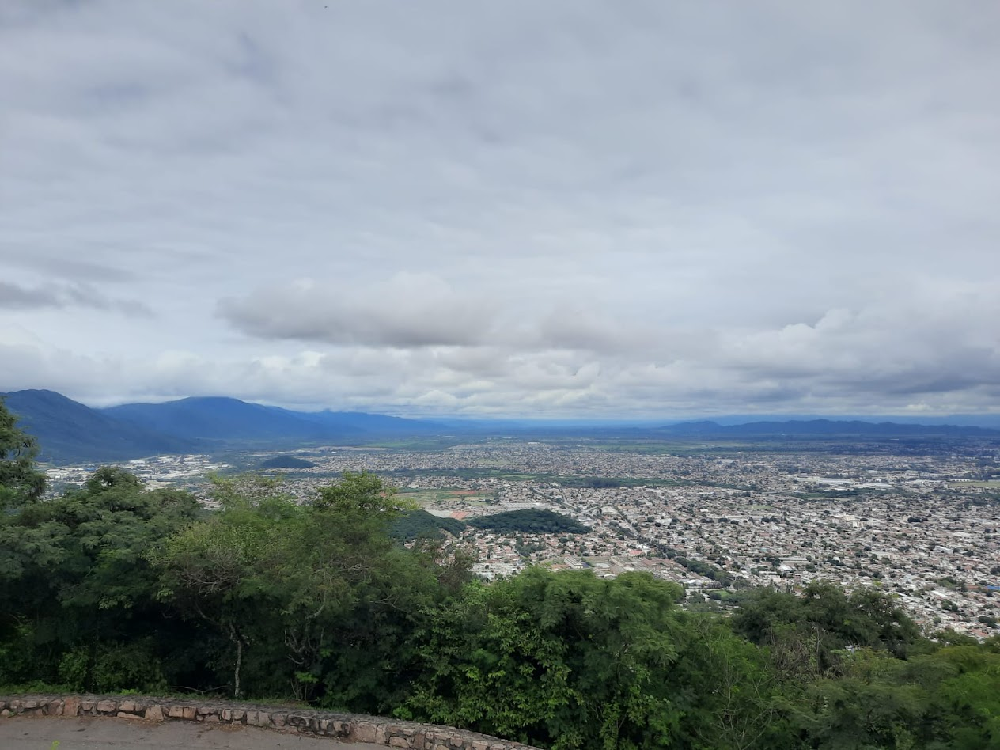

L'AVENTURE ANDINE
Le Nord-Ouest argentin est une terre de contrastes. Des vignobles de Cafayate aux déserts de sel des Salinas Grandes, chaque kilomètre offre un nouveau spectacle.
CAFAYATE







